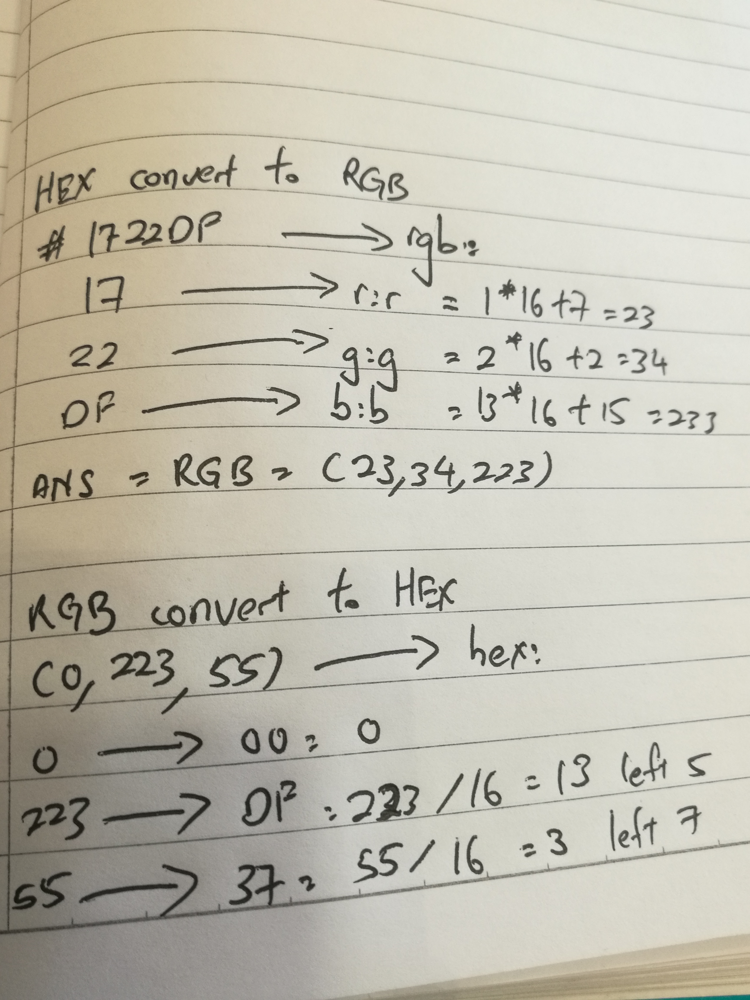

In CSS, commonly use the Hexadecimal color code to add color for element HTML. It use the RRGGBB(Red, Green, Blue) to adjust or create color. In HEX we use 0-f to develop a depth of color. For example is red (#ff0000), and we can see the red position put "FF", green and blue position put "0000" so it will tell the computer put the red light to brightest and let the green and blue light in dark, the result is screen will display red color. Remember want to put the “#" in front of the RGB. It also can mixed the color to create another color such as yellow(#ffff00) when ”000000“ is black and "ffffff" is white. HEX and RGB can convert to each other.
